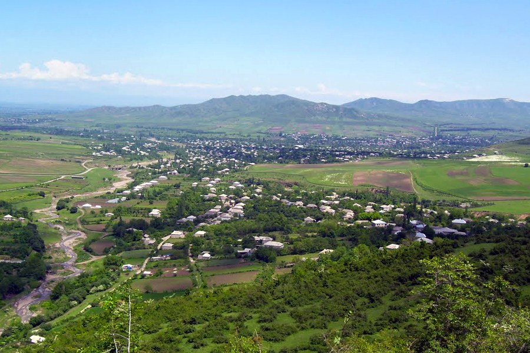
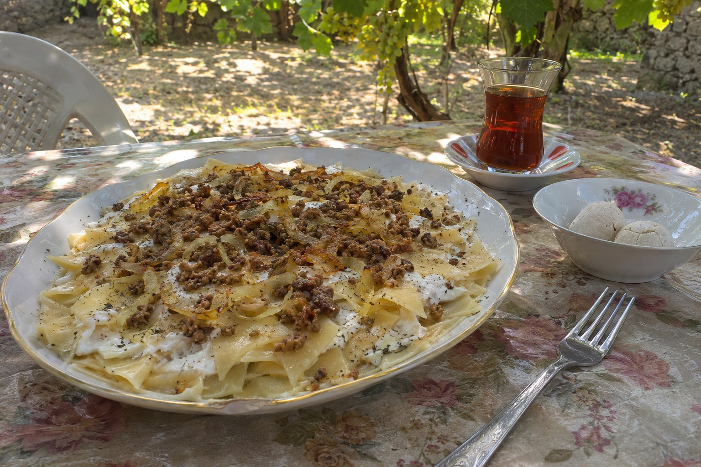

Чортан

Режьте ромбиками. Нет, это не ромбик, это вы письмо написали — длинное, с хвостом. Ромбик — чтобы два пальца, и ещё немного. Ничего, режьте как режется, в кастрюле все одинаковые. Севиль бы вас прогнала, но Севиль сегодня в Марнеули на свадьбе у племянницы, тесто оставила с утра под полотенцем и сказала: «Акиф, не трогай, пусть отдохнёт». Оно отдохнуло. Теперь мы с вами работаем.
Меня Акиф зовут, вам это уже говорили на дороге, когда вы спросили, где тут «рынок». Рынка нет. Вон там, где теперь склад и шиномонтаж, до самой реки, был рынок. Вы стоите у меня во дворе, а отсюда до Армении — если по прямой и через Дебед — я пешком дохожу быстрее, чем до мечети. Багратишен у них, Садахло у нас, между домами местами шестьсот метров. Собака лает там — у нас отвечают.
Вода пусть закипает, а я вам расскажу, раз вы за этим приехали. Только тесто не бросайте.
В девяносто втором мне было, как сейчас моему сыну, — то есть ещё ничего не болело, а уже всё было надо. Совхоз кончился. Работы нет, денег нет, свет — когда дадут. А через реку война. Не у нас, у них с нашими, — вы понимаете, как я это говорю. Карабах. Поезд из Баку в Ереван больше не ходил, машины не ходили, ничего не ходило. А людям есть надо и там, и там. И получилось так, что единственное место, где армянин и азербайджанец могли встретиться и не убить друг друга, а продать друг другу муку, — это наше поле у моста. Грузия посередине, грузинский пограничник в будке, грузинская земля под ногами. На своей земле им нельзя, на нашей можно.
Сначала стояли с машин. Привезёшь мешки, откроешь багажник, и всё. Потом — палатки. Потом — ряды, проходы, номера, хозяин рынка, весы, туалет за деньги. Через пять лет это был самый большой рынок на всём Кавказе, я вам честно говорю, не потому что я там стоял. Мне потом армянский человек сказал, из министерства, — шёпотом сказал, — что через наше поле в год проходит столько денег, сколько у Армении весь бюджет. Я посмотрел на свою палатку. Там висели спортивные штаны и стоял мешок с сахаром. Я не поверил. Потом посчитал, сколько нас таких, и поверил.
Мы, азербайджанцы, продавали. Армяне покупали. Грузины держали. Так было, и никто не обижался. Мы везли из Турции и из России: муку, масло, одежду, сахар, лопаты, пластмассовые тазы, детские колготки, кожаные куртки, которые в дождь становились картонными. Армяне везли своё — коньяк, сухофрукты, кофе — и ещё иранский товар. У них с Ираном граница открыта, у нас — нет. Порошок стиральный «Барф» знаете? По-персидски это снег. Мне потом в Тбилиси один студент сказал, что по-английски это совсем другое, и я неделю смеялся, а порошок был хороший, мы им всё стирали.
Теперь режьте вот эту полосу. Да, поперёк. Видите, уже похоже.
Пока режете, я поставлю лук. Вот он, я его нарезал, пока вы с тестом мучились. В казан масло, лук, пусть золотится, не спешите. Потом фарш. Баранина, конечно. Мешаю лопаткой, чтоб был не комом, а как песок.
Гагика я встретил в первый же год. Он пришёл покупать муку. Высокий, в очках, нос — как у моего дяди, клянусь, я так и сказал ему вместо «здравствуйте». Он сказал: «У всех нормальных людей такой нос». Мы торговались за муку минут сорок. Я снизил, он поднял, я снизил ещё, он сказал, что у меня мука с червями, я сказал, что черви тоже белок, он засмеялся первый. Это я считаю — я выиграл. Он считает, что выиграл он, потому что купил дешевле. Мы так тридцать лет и не договорились, кто тогда выиграл.
Он был учитель математики в Ноемберяне. Школа стояла, зарплаты не было. Он ездил на рынок, брал у меня, у других, вёз в Ереван, там продавал. Математика ему пригодилась больше, чем в школе: он в уме считал быстрее моего калькулятора, и калькулятор у меня в итоге украли, а голова у него осталась. Я по-армянски выучил счёт до тысячи. Для торговли хватает, для остального — руки. Он по-нашему выучил всё, что нужно на рынке, а ругался по-нашему лучше меня. У нас в Садахло многие говорят по-армянски, вы не удивляйтесь, у меня соседка по-армянски поёт колыбельные, а сама здешняя, садахлинская. Так жили всегда. На том берегу половина стариков тоже по-нашему понимает, только не признаётся.
Днём мы с Гагиком торговались насмерть. Вечером, когда рынок сворачивался, он садился у меня в палатке на мешок, я ставил чайник на газ. Чай — «Азерчай», в жёлтой пачке, другой я не пью и вам не дам. И вот с этим чаем была отдельная история.
Армяне брали у нас «Азерчай» мешками. Не все, но многие. Гагик тоже. Каждую неделю — двадцать пачек. Я спросил: «Ты столько пьёшь?» Он сказал: «Тёща». Тёща у него жила там, куда мне дороги нет, а ему есть, но тоже не очень. Они там, в горах, всю жизнь пили наш чай, привыкли, другой им как вода. Война войной, а чай — это утро. Я ничего не спрашивал. Он ничего не говорил. Я ему каждый раз клал двадцать первую пачку сверху и говорил, что это брак, коробка помялась. Он брал и говорил, что я плохо храню товар. Так и было десять лет.
Вода кипит. Солите. Сильнее, это не суп. Бросайте не все сразу, горстями, и мешайте, чтоб не слиплись. Видите, всплывают — значит, ещё минуты три.
Теперь про гурут. Вот он, в миске, я с утра замочил. Это сухой кислый сыр, если по-вашему. Берёшь гатыг — мацони, как грузины говорят, — подвешиваешь в мешке, пока не стечёт, солишь, катаешь шарики и сушишь на солнце, на крыше, на чём угодно, лишь бы кошка не достала. Шарик становится как камень. Зимой его размачиваешь, трёшь, и у тебя опять кислое, белое, только уже крепче. Без гурута хингал — это просто тесто с мясом.
А у армян то же самое называется чортан. Они делают из тана — это когда из мацуна сбили масло, остаётся пахта. Пахту варят, отцеживают и тоже сушат. Разница, как между нами: никакой, но вслух это говорить нельзя.
Жена Гагика, Анаит, делала чортан. И Гагик однажды привёз мне два шарика в газете — подарок, говорит, попробуй, что такое настоящий. Я попробовал. Я сказал: «Это гурут». Он сказал: «Это чортан». Я сказал: «Гурут, только пересоленный». Он сказал: «Это у вас недосоленный, вы экономите на соли, потому что торгуете солью». С тех пор каждую осень он привозил мне чортан, я ему отдавал гурут Севиль, и мы спорили, чей вкуснее. Ни разу никто не уступил. Севиль говорила: «Вы как два петуха над одной крошкой». Анаит, говорят, говорила то же самое, только по-армянски.
Знаете, вы бы на рынке за день разорились. Вы же не спрашиваете, сколько стоит. Вы спрашиваете, откуда это. Я вам сейчас скажу, сколько стоит гурут, и вы запишете, а цену не запомните, я по лицу вижу.
Сливайте. Вон в дуршлаг. Аккуратно, горячо.
Рынок закрыли, когда пришёл Саакашвили. Не сразу. Сначала пришли молодые таможенники, вежливые, в новой форме, по-английски знают, взяток не берут — это было страшнее всего. Раньше ты знал, кому и сколько. Теперь никто ничего не брал, и поэтому ничего нельзя было провезти. Год, два — и поле опустело. Говорили, контрабанда, а для нас это была жизнь. Я сейчас понимаю, что правильно закрыли. Страна должна быть страной, а не дыркой в заборе. Но кушать хотелось и тогда, когда закрыли, это тоже правда. Я пошёл в Марнеули на овощной, потом сын подрос, открыл лавку в Тбилиси, в Поничале — мы её зовём Соганлуг, у нас там полрайона своих. Чай, сухофрукты, специи. Гурут тоже продаёт, мой. Говорит, грузины берут, а армяне с Авлабара берут больше всех и говорят: «О, чортан». Он им не спорит. Он у меня умный, он торговец, а я был просто продавец.
С Гагиком мы и без рынка виделись. Он ездил в Тбилиси через нас, заезжал, сидели. Я к ним не ездил. Можно было, паспорт грузинский, никто бы не тронул, наверное. Но «наверное» — плохое слово для дороги.
Двадцатый год вы помните. Сначала летом стреляли у Товуза — это прямо за нашей границей, там у меня двоюродные братья, у них окна на ту сторону. А осенью была война. Сорок четыре дня. У меня племянник был в армии — в азербайджанской, он там живёт. У Гагика внук — в армянской. Оба там, в одно и то же время. Я об этом узнал не от него. Он не позвонил ни разу, я тоже. Телефон у меня в руке был каждый вечер. Что скажешь? «Как твой внук?» А он мне — «как твой»? И что мы друг другу ответим?
Сорок четыре дня мы оба молчали. Здесь, в Садахло, тоже молчали. Мы сидели вечером у чайханы, по-армянски никто не говорил, хотя все умеют. Грузины-пограничники ходили на мосту тише обычного. Река была та же самая.
Потом закончилось. Мой племянник вернулся. Про его внука я не знал ничего.
В ноябре пришёл водитель, маршрутчик из Ахтала, которого я немного знал, — он возил людей до Тбилиси. Вынес из кабины пакет. Говорит: «Тебе». Я открываю — чортан. Пять шариков. Без записки, без ничего. Я понюхал. Пересоленный. Как всегда.
Я сел у калитки и сидел, наверное, час. Севиль вышла, посмотрела, ничего не спросила, ушла ставить чай.
Я тоже записку не писал. Я отправил с тем же водителем гурут. Шесть шариков. Чтоб на один больше, как с чаем. Он поймёт.
Он понял. Весной позвонил. Внук живой. Ногу ему собрали, ходит. Про остальное мы не говорили и не говорим. Мы об этом не договаривались, так вышло само.
А теперь вы смеяться будете. В двадцать втором году Грузия не пропустила армянский мацун в Россию. Машину на границе развернули. Сказали: у нас мацони зарегистрировано, ещё с двенадцатого года, а у вас мацун, это слишком похоже, нарушение. Гагик позвонил мне из Ноемберяна — кричал, ругался, по-нашему, по-армянски, по-русски, на всех сразу. Я говорю: «А мне что, у меня гатыг». Он говорит: «Подожди, до гатыга тоже доберутся». И мы проговорили час. Первый раз за два года — час. Про цены, про сыр, про то, у кого слово старше. Он сказал, что чортан есть в армянском эпосе, в «Сасна црер», я сказал, что гурут есть везде, где у людей были овцы и не было холодильника. Он сказал: «Вот поэтому вы и торгуете, а мы пишем эпос». Я сказал: «Зато мы продали вам муку на ваш эпос». Ну и так далее, вы поняли.
Вот, видите. Чтобы армянин с азербайджанцем помирились, надо, чтобы грузины что-нибудь запатентовали.
Гурут давайте. Растираем, чеснок туда, вот так, ложкой, пока не будет как густая сметана. Если слишком густо — каплю воды, где варился хингал. Не холодной, а той.
Сегодня Гагик должен был приехать. Колени. Не доехал. Позвонил утром, говорит: «Чортан я передал, ешь, пока ваши не запатентовали». Он теперь каждый раз так прощается.
Поэтому у меня в миске — смотрите — два гурута. Вот это мой. Вот это его. Я их вместе развёл. Вы спрашиваете, как теперь различить? Никак. Попробуйте — скажите, где мой.
Не говорите. Я и так знаю, что скажете.
Теперь собираем. На блюдо слой хингала, сверху гурут, сверху лук с мясом. Опять хингал, гурут, мясо. Мята сухая — щепоткой, не больше, это не чай. И сразу, пока горячо. Остынет — это уже не хингал, а клей.
Чей он, спрашиваете? Того, кто ест. Садитесь.

Хингал с гурутом
На четверых
Что нужно
Для теста:
- мука — 400 г;
- яйцо — 1 шт.;
- вода — около 160 мл;
- соль — 1 ч. л.
Для гурута:
- гурут (сушёный кислый творог; у армян — чортан) — 150 г, три-четыре шарика;
- тёплая кипячёная вода — 300 мл;
- чеснок — 4 зубчика;
- если гурута нет — 300 г густого мацони, отцеженного в марле 2–3 часа.
Для обжарки:
- бараний фарш (можно пополам с говяжьим) — 400 г;
- репчатый лук — 3 крупные головки;
- топлёное масло — 60 г;
- соль — 1 ч. л., чёрный перец по вкусу;
- сушёная мята — щепотка.
Как делать
1. Гурут с вечера разломите и залейте тёплой водой; за ночь, или хотя бы за 5–6 часов, он размокнет.
2. Замесите крутое тесто из муки, яйца, воды и соли, накройте полотенцем и оставьте на 30–40 минут.
3. Раскатайте тесто тонко, в 1,5–2 мм, нарежьте полосами шириной 3–4 см, а полосы — наискосок, ромбами.
4. Лук нарежьте полукольцами и жарьте в топлёном масле на среднем огне 12–15 минут, до золотого цвета. Добавьте фарш и жарьте ещё 10–12 минут, разбивая лопаткой, пока не станет рассыпчатым. Посолите, поперчите.
5. Размокший гурут разотрите ложкой или разомните вилкой до густой сметаны, добавьте давленый чеснок. Если масса слишком густая, разбавьте 2–3 ложками воды, в которой варится хингал.
6. Отварите ромбы в большой кастрюле подсоленной кипящей воды (на 3 л — 1,5 ст. л. соли) порциями, помешивая, 3–4 минуты после всплытия. Откиньте на дуршлаг.
7. Собирайте на горячем блюде слоями: хингал, гурут, лук с мясом — и снова. Сверху посыпьте мятой, растерев её в пальцах.
8. Подавайте сразу.
Если делать гурут самому: 1 кг жирного мацони (гатыга) посолите 2 ч. л. соли, подвесьте в полотняном мешочке на сутки, чтобы стекла сыворотка. Скатайте шарики размером с грецкий орех и сушите 7–10 дней на солнце или в сухом проветриваемом месте, переворачивая, пока не станут твёрдыми. Храните в полотняном мешочке.
Гурут ждёт до весны, а хингал не ждёт никого: его едят, пока горячий.
Тбилиси, ноябрь 2026